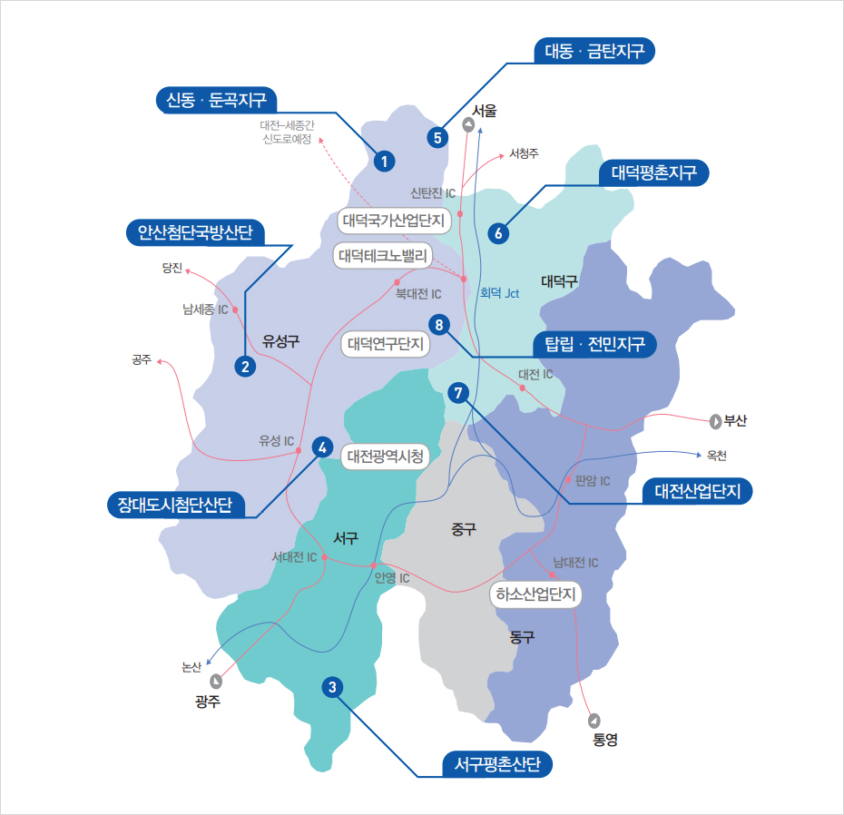
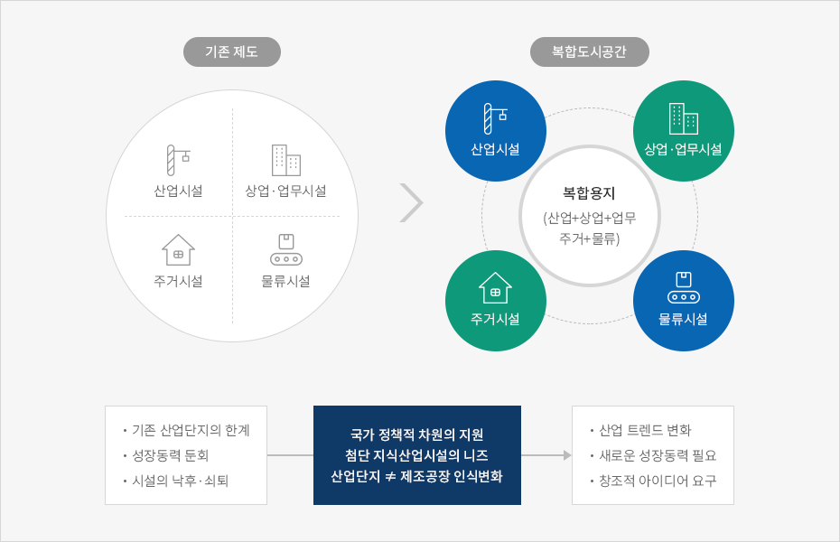

주요 산업단지 위치도
- Home
- 투자 프로젝트
- 주요 산업단지 위치도


- 유성구 : 연구ㆍ둔곡지구, 안산첨단국방산단, 잠대도시첨산단, 대동ㆍ금탄지구, 탑립ㆍ전민지구, 대덕국가산업단지, 대덕테크노밸리, 대덕연구단지, 남세종IC, 유성IC, 북대전IC
- 서구 : 서구평촌산단, 대전광역시청, 서대전IC, 안영IC
- 중구
- 동구 : 하소산업단지, 판암IC, 남대전IC
- 대덕구 : 대덕평촌지구, 대전산업단지, 대전IC

맞춤형 복합산업단지 조성
- 쾌적한 주거환경, 연구ㆍ교육 기능을 갖춘 복합산업단지 및 기업 중심의 중소규모 맞춤형 단지 개발에 대한 수요 증가
- 기술혁신과 산학연 연계의 중요성 속 산업단지 기능이 복합도시공간으로 빠르게 변화
